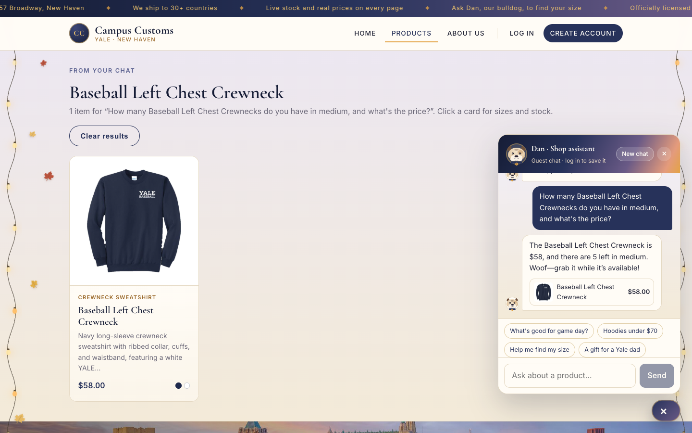
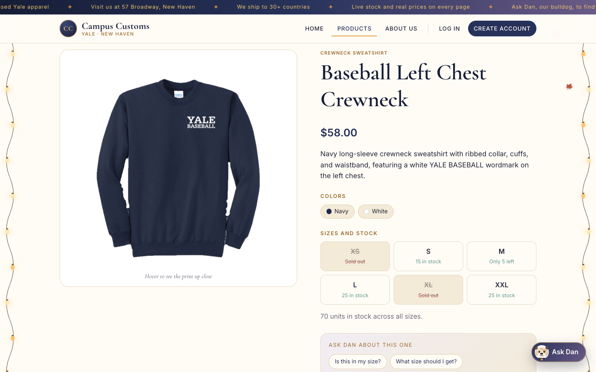
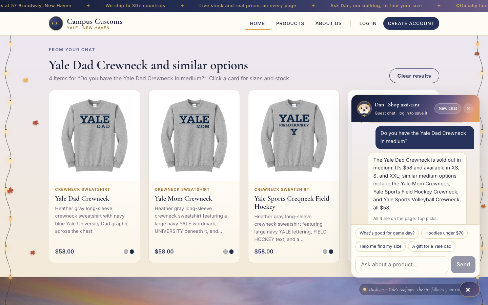
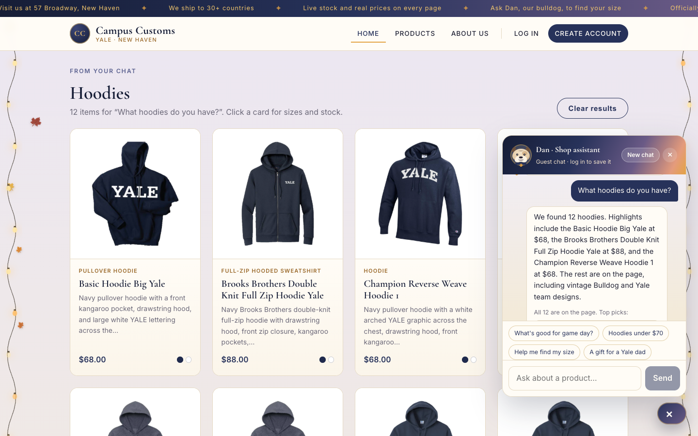
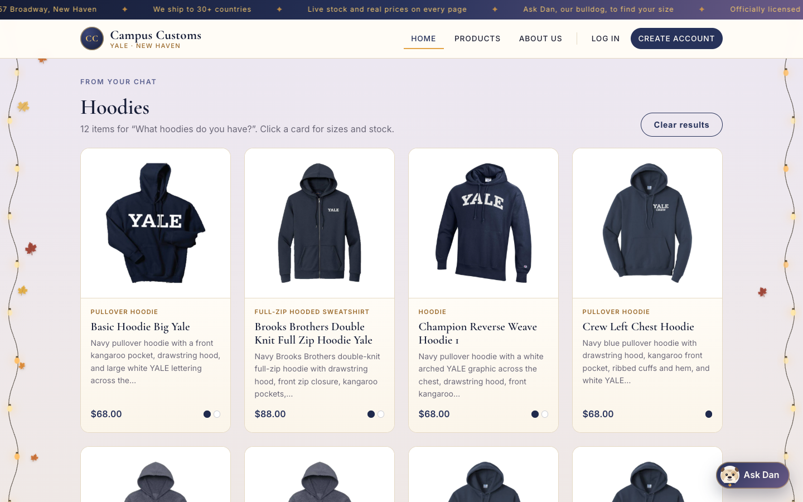
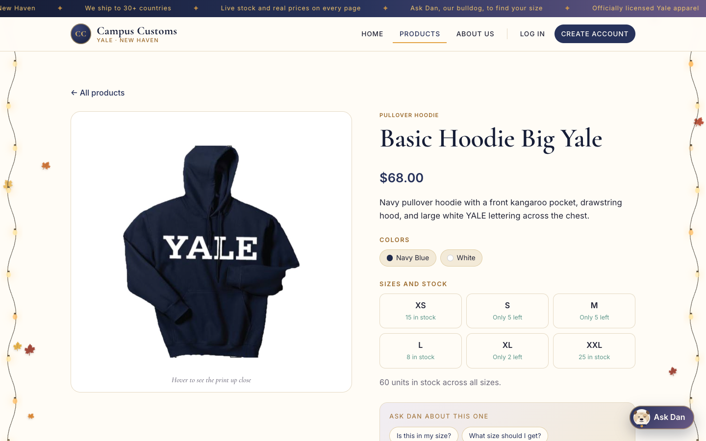
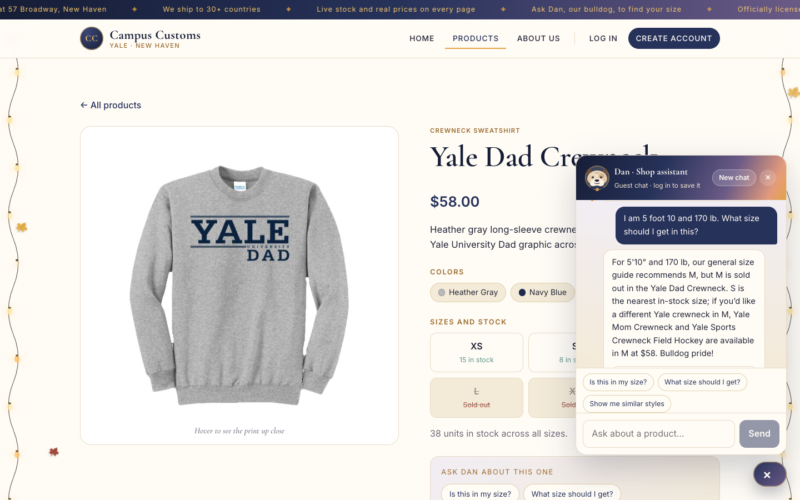

| # | Check | Result |
|---|---|---|
| 1 | Chat checks the inventory level of an item (honest stock and price from the database), plus an honest "sold out" answer | ✓ Pass |
| 2 | Dynamic search-result cards appear on the page after a category question ("What hoodies do you have?"), and they open the product page | ✓ Pass |
| 3 | Problem 9 usability feature: size recommendation (with similar items when the recommended size is sold out) | ✓ Pass |
Check 1: Chat checks an item's inventory (honest stock and price)
Shopper asks: "How many Baseball Left Chest Crewnecks do you have in medium, and what's the price?"

Proof from the database (data/campus_customs.db)
SELECT size, quantity FROM inventory WHERE product_id = 'baseball-left-chest-crewneck' · price from catalogue = $58.00
| XS | S | M | L | XL | XXL |
|---|---|---|---|---|---|
| 0 | 15 | 5 | 25 | 0 | 25 |
The audit trail (output/audit_trail.json, run c8a628a942) shows the number came from a tool, not the model's memory:
search_products(query="Baseball Left Chest Crewneck") → baseball-left-chest-crewneck, …
check_stock(product_id="baseball-left-chest-crewneck", size="medium")
→ {"status": "low_stock", "size": "M", "quantity": 5, "price": 58.0}
validator retries: 0 (every $ price and stock count in a reply must match a tool result)
Bonus: an honest "sold out"
Shopper asks: "Do you have the Yale Dad Crewneck in medium?"
Proof from the database
| Product | XS | S | M | L | XL | XXL | Price |
|---|---|---|---|---|---|---|---|
| Yale Dad Crewneck | 15 | 8 | 0 | 0 | 0 | 15 | $58 |
| Yale Mom Crewneck | 8 | 8 | 12 | 8 | 15 | 2 | $58 |
| Yale Sports Crewneck Field Hockey | 0 | 8 | 15 | 0 | 8 | 5 | $58 |
| Yale Sports Crewneck Volleyball | 25 | 15 | 2 | 25 | 2 | 5 | $58 |
Audit run 7a3ef5ec3f: check_stock(yale-dad-crewneck, "medium") → status "sold_out", quantity 0, with similar_in_stock filled automatically, and each of those has M in stock.
Check 2: Dynamic search-result cards after a category question
Shopper asks on the Home page: "What hoodies do you have?"




/products/basic-hoodie-big-yale, the single-item page from Problem 3 (large image, full info, sizes and stock).How the results reach the page (API contract)
Audit run 5410db4990: the agent called search_products(query="hoodies", limit=12) and returned structured output {reply, product_ids[12], results_title: "Yale Hoodies"}. The server rebuilt the 12 cards from the database, and all 12 are hoodies (the catalogue has 27, and a browse shows up to 12):
basic-hoodie-big-yale, brooks-brothers-double-knit-full-zip-hoodie-yale, champion-reverse-weave-hoodie-1, crew-left-chest-hoodie, district-vit-hoodie-vintage-bulldog, district-vit-hoodie-vintage-sailor-bulldog, fencing-left-chest-hoodie, ice-hockey-left-chest-hoodie, sailing-left-chest-hoodie, squash-left-chest-hoodie, the-forest-school-hoodie, volleyball-left-chest-hoodie
Check 3: Problem 9 usability feature, size recommendation
On the Yale Dad Crewneck page, the shopper asks: "I am 5 foot 10 and 170 lb. What size should I get in this?"
Proof
Audit run 663ef43ea9: recommend_size(product_id="yale-dad-crewneck", height_inches=70, weight_lbs=170) → recommended_size "M", recommended_status "sold_out", nearby in-stock size S, plus similar_in_stock. The general size chart puts 5'10" (≤ 70.5 in) and 170 lb (≤ 175 lb) in M. In the database, Yale Dad Crewneck M = 0 and S = 8; Yale Mom Crewneck M = 12; Field Hockey M = 15 (see the table in Check 1). The full write-up of this and the other Problem 9 features is in output/usability.md.
Reproduce: run the backend (cd backend && uvicorn main:app --reload --port 8000) and the front end (cd frontend && npm run dev), open http://localhost:5173, and ask the same questions. Every chat turn is recorded in output/audit_trail.json.